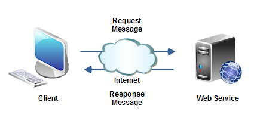
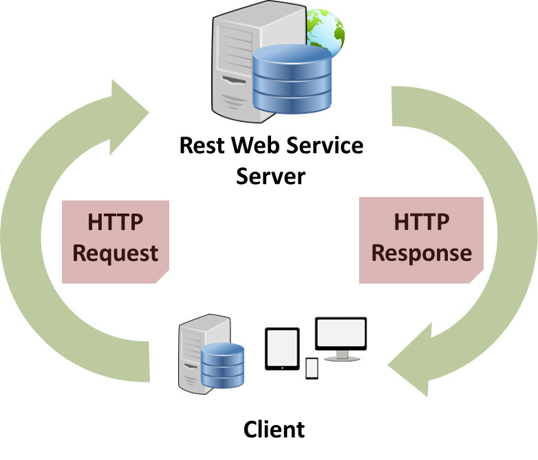

WebServices
Sitemas distribuidos
- Johan Armando Villamil Gaitan
20171679024 - Juan Jose Medina Sarmiento
20171679053
¿Que son los webservices?
Son aplicaciones cliente-servidor que se comunican a través de la World Wide Web usando HTTP (HyperText Transfer Protocol) con la diferencia que NO poseen interfaz grafica. (Programas que conectan programas)
Algunas Caracteristicas
proveen un estándar de interoperabilidad entre aplicaciones de software
Tambien
Se caracterizan por su gran interoperabilidad y extensibilidad.
Tambien
Permiten a las organizaciones compartir data sin la necesidad de conocer detalles de sus respectivos sistemas de información.
Usos
- Componentes de Aplicación Reutilizables
- Conectar Software Existente
Componentes de Aplicación Reutilizables
Hay funcionalidades que siempre se necesitan, ¿por que crearlas una y otra vez? Se pueden ofrecer componentes de aplicación que se usan muy a menudo como: servicios de conversión de moneda, reportes del clima, o incluso traducción de lenguajes .
Conectar Software Existente
Proveen una solución a los problemas de interoperabilidad brindando a diferentes aplicaciones una manera de conectar su información.Con un servicio web usted puede intercambiar data entre diferentes aplicaciones y diferentes plataformas. Estos servicios pueden ser creados sin importar el lenguaje de programación..
Tecnología de los Web Services
Los Web Services están construidos con varias tecnologías que trabajan conjuntamente con los estándares que están emergiendo para asegurar la seguridad y operatibilidad, de modo de hacer realidad que el uso combinado de varios Web Services, independiente de la o las empresas que los proveen, esté garantizado.
XML
Extensible Markup Language
El XML es una especificación desarrollada por W3C. Permite a los desarrolladores crear sus propios tags, que les permiten habilitar definiciones, transmisiones, validaciones, e interpretación de los datos entre aplicaciones y entre organizaciones
SOAP
Simple Object Access Protocol
Es un protocolo de mensajería construido en XML que se usa para codificar información de los requerimientos de los Web Services. Los mensajes SOAP son independientes de los sistemas operativos y pueden ser transportados por los protocolos que funcionan en la Internet, como ser: SMTP, MIME y HTTP..
WSDL
Web Services Description Language
Es un lenguaje especificado en XML que se ocupa para definir los Web Service como colecciones de punto de comunicación capaces de intercambiar mensajes. El WSDL es parte integral de UDDI y parte del registro global de XML, en otras palabras es un estándar de uso público (no se requiere pagar licencias para usarlo).
UDDI
Universal Description, Discovery and Integration
Es un directorio distribuido que opera en la Web que permite a las empresas publicar sus Web Services, para que otras empresas conozcan y utilicen los Web Services que publican, opera de manera análoga a las páginas amarillas.
RESTful Services
Representational State Transfer
Es un ESTILO de Arquitectura a la hora de realizar una comunicación entre cliente y servidor.
Tiene unas caracteristicasTipologia de mensajes XML o JSON
Basado en recursos (en vez de servicios -> SOAP)
MLas operaciones son categorizadas de forma más estricta (Verbos HTTP)
Para recursos relacionados se utiliza HATEOAS (Hypertext As The Engine Of Application State
Ventajas
- Aportan interoperabilidad entre aplicaciones de software independientemente de sus propiedades o de las plataformas sobre las que se instalen.
- Los servicios Web fomentan los estándares y protocolos basados en texto, que hacen más fácil acceder a su contenido y entender su funcionamiento.
Mas Ventajas
- Permiten que servicios y software de diferentes compañías ubicadas en diferentes lugares geográficos puedan ser combinados fácilmente para proveer servicios integrados.
Desventajas
- Su rendimiento es bajo si se compara con otros modelos de computación distribuida, tales como Java Remote Method Invocation (RMI), CORBA o Distributed Component Object Model (DCOM). Es uno de los inconvenientes derivados de adoptar un formato basado en texto. Y es que entre los objetivos de XML no se encuentra la concisión ni la eficacia de procesamiento.
Mas Desventajas
- Para realizar transacciones no pueden compararse en su grado de desarrollo con los estándares abiertos de computación distribuida como CORBA (Common Object Request Broker Architecture).
- Al apoyarse en HTTP, pueden esquivar medidas de seguridad basadas en firewall cuyas reglas tratan de bloquear o auditar la comunicación entre programas a ambos lados de la barrera.
"Ejemplo"
Sitios Web 1992

Servicios Web (2000)
Comparativa tres
Conclusiones
- Se pueden implementar funciones imposibles de contemplar bajo el uso de rutinas de librerías, como por ejemplo, incorporar un buscador de páginas web.
- La carga de CPU que supone la ejecución de una rutina desaparece. La carga se reparte por Internet.
- Los Servicios Web no son una versión mejorada de las librerías o módulos de programación.
- Los servicios web serán o no útiles en función de la funcionalidad que ofrezcan, siempre y cuando sea sencilla su utilización.
Live Coding
GRACIAS
Bibliografia
https://msaffirio.com/2006/02/05/%C2%BFque-son-los-web-services/ https://es.wikipedia.org/wiki/Servicio_web http://www.drdobbs.com/web-development/restful-web-services-a-tutorial/240169069/ http://www.arquitecturajava.com/que-es-rest/